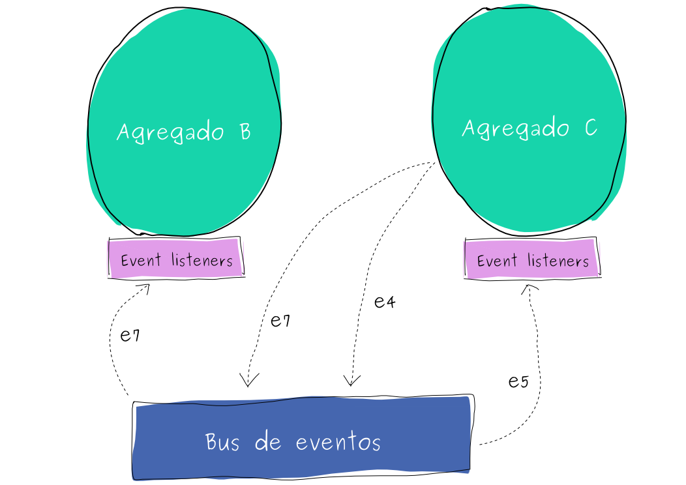

El Agregado puede ser el patrón táctico más importante de #DDDesign pues nos permite fijar limites transaccionales a nuestras entidades de negocio. Es interesante cómo aplicando sabiamente este patrón se facilita la construcción de aplicaciones que soportan considerables volumenes de concurrencia.
Sin embargo me he encontrado más de una vez con la dificultad de representar las relaciones existentes entre Entidades que pertenecen a Agregados distintos dado que no deberían conocerse; al menos no directamente. Esta dificultad aumenta cuando además un cambio de estado en un Agregado tiene consecuencias (side-effects) en otros Agregados.
Vaughn Vernon explica en su artículo que este tipo de relaciones se pueden modelar de varias maneras dependiendo del escenario. El acercamiento más interesante es cuando explica como podemos hacer uso (o abuso) de la consistencia eventual para permear cambios ocurridos en un Agregado a otro a través de Eventos de Dominio.
En teoría la solución planteada por Vernon es bastante fácil de aplicar y creo que pueden haber decenas de opciones para implementarla. No obstante en esta entrada de la bitácora les presento una a la que llegué haciendo uso de un bus de eventos lo cual, me permitió no solo implementar un sencillo patrón Publicar-Suscribir en memoria sino que cuando llegó el momento pude de manera sencilla implementar protocolos de recuperación para fomentar la consistencia entre Agregados.
Es importante recordar que un Agregado es responsable sólo de una transacción que manifiesta consistencia de ACID y no de CAP, mientras que una transacción de un Agregado que afecta otro agregado es “CAP consistente” y no “ACID consistente”. Por ejemplo, a un Agregado se le exige que la integridad de todos los elementos involucrados en la transacción sea garantizada o linealmente trazable. Sin embargo las transacciones que cobijan más de un Agregado deberían ser capaces de soportar la consistencia más débil (Consistencia Eventual) dado que transaccionalmente no son dependientes consecuencia de la definición del Modelo de Dominio. (Este párrafo debe ser ampliado en una futura entrada)
A continuación les presento una esquematización de cómo comunicamos Agregados a través de los buses de eventos.

Como se describe en el diagrama, cada Agregado tiene acceso al Bus de Eventos y si un Agregado está interesado en los eventos del otro, define un Suscriptor al Bus de Eventos del Agregado que generará los Eventos de Dominios interesantes permitiendo una gran capacidad de evolución y composición de comportamiento.
No es más que una abstracción a través de la cual se logra desacoplar publicadores de mensajes y suscriptores a esos mensajes. Una implementación sencilla la encontré en la librería de Guava y es la que usé en la implementación de ese proyecto. Cabe anotar que este bus de eventos es siempre inyectado como Singleton a las entidades que van a publicar eventos vía Guice. Soy consiente que Singleton es una aberración de OO pero en este caso aplica bien y sin consecuencias en concurrencia.
El bus de eventos resuelve de manera más sencilla lo que se busca al implementar el patrón Observador de GoF generando menor grado de acoplamiento pues implementa el patrón de Indirección de GRASP promoviendo alta cohesión y reutilización.
Cada vez que un Agregado ejecuta una transacción implica que se está realizando un cambio en el estado de alguna Entidad perteneciente al Agregado. Muchas veces esta modificación de estado implica cambios de estado en otras Entidades que no pertenecen al Agregado. Para soportar esta situación se puede hacer uso de Eventos de Dominio que representen estos hechos (cosas que pasaron) y publicarlas al Bus de Eventos.
El Bus de Eventos notificará a los Suscriptores interesados en esos eventos quienes a su vez iniciarán una transacción en el Agregado al cual pertenecen, respetando así los límites transaccionales fijados. Piensen en estos Eventos de Dominio como DTOs que representan consecuencias de cambios en Entidades dentro de Agregados. En consecuencia administramos transacciones eventualmente consistentes entre Agregados en memoria y sin hacer uso de tecnologías grasosas e ineficientes.
Una descripción más detallada de los Eventos de Domino la pueden encontrar en el libro de Vaughn Vernon “Implementing Domain-Driven Design” en el capítulo 8.
Una vez hemos desacoplado los Agregados a través del Bus de Eventos podemos ir modificando los atributos transaccionales de los Eventos de Dominio. Por ejemplo, imaginen que alguna transacción de un Agregado consecuencia de una modificación en otro Agregado se toma demasiado tiempo. Fácilmente podemos crear un Suscriptor que una vez reciba la notificación de un nuevo Evento persista este evento en una Fuente de Eventos y luego trate de iniciar la transacción. Si falla o se demora, podremos administrar muy granularmente los reintentos (exponential backoff por ejemplo) o la cantidad de recursos involucrados en la transacción.
Igualmente, al estar utilizando el mecanismo de consistencia más débil, podemos evitarnos el uso de candados transaccionales o cualquier vicio de sincronización de procesos.
También existe la posibilidad de tener bitácoras de auditoría de transacciones con solo crear Suscriptores genéricos que estén interesados en todo tipo de eventos para luego persistirlos. Fijense que esta última nos abre una puerta muy interesante: la evolutividad de mi aplicación es sencilla gracias al alto desacoplamiento que me permite tener el patrón Publicar-Suscribir.
De acá quedan abiertas muchas posibilidades. Por ejemplo aplicar otros patrones de Enterprise Integration Patterns a nuestro dominio. También crear Fuentes de Eventos consultables idempotentes por otros Aggregates para que estos se mantegan consistentes sin la necesidad de crear suscriptores, volviendo así autónomos algunos Agregado de nuestro dominio y, si mis Agregados son autónomos, puedo terminar construyendo Contextos Delimitados autónomos.
Se podría pensar también que estos eventos no deberían estar limitados al dominio sino que es posible que estos puedan trascender inclusive Contextos Delimitados regalandonos una implementación de aplicaciones orientadas a eventos.
¡Me encantaría saber qué opinan!